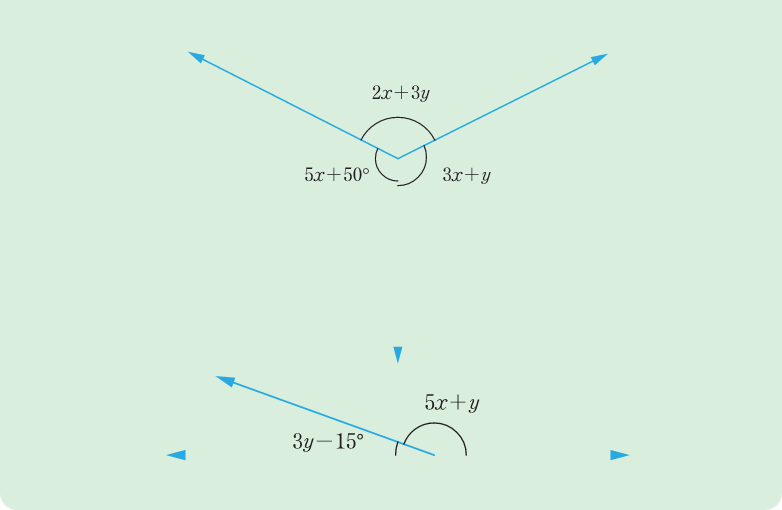

10. Use the following two figures to calculate the values of x and y.

Solution of inequalities with one unknown
Solutions of inequalities with one variable are determined by using similar approach as that used in solving linear equations. However, there are some specific aspects to consider when solving inequalities. In most cases, solutions in inequalities are presented in range or as a set. Thus, solving linear inequalities requires adhering to the following rules:
- (a) Adding or subtracting an equal value to both sides does not change the inequality sign.
- (b) Multiplying or dividing on both sides by a positive number does not change the inequality sign.
- (c) Multiplying or dividing on both sides by a negative number changes the inequality sign.
Your answers are saved on this device as you type.